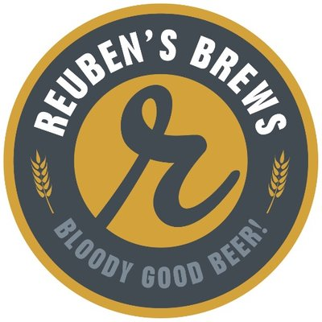

Seattle Brewery Finder

Reuben's Brews
Reuben’s Brews opened in the Ballard neighborhood of Seattle in August 2012, and ever since has become one of the most popular spots for local beer in the city. In their time on the scene, they have won several awards for their beers, including winning “Mid-Sized Brewery of the Year” at the 2015 Washington Beer Awards. A bit of trivia, Reuben’s Brews is named after founders Adam and Grace Robbing’s son, Reuben!
- Reuben's Brews Website
 Facebook
Facebook Twitter
Twitter Instagram
Instagram Untappd
Untappd
- 5010 14th Ave NW
- Seattle, WA 98107
- Daily: 11am - 10pm
- 206-784-2859
- reubensbrews@gmail.com